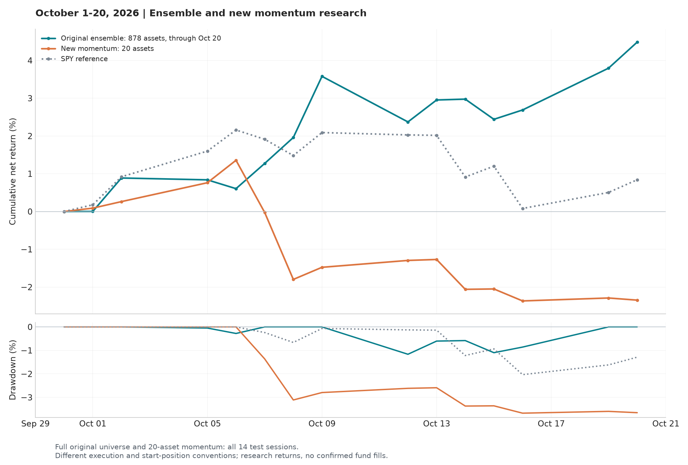

Ensemble & momentum backtests
October 1–20, 2026 · Research simulations · No confirmed fund fills
14 trading sessions. Complete closing marks for both universes; missing daily bars were recovered from dated closing sources. Different execution and start-position conventions apply.
October 1–20 results
| strategy | start | end | assets | total_return_pct | max_drawdown_pct | annualized_sharpe |
|---|---|---|---|---|---|---|
| Original dynamic ensemble | 2026-10-01 | 2026-10-20 | 878 | 4.485 | -1.165 | 6.763 |
| New momentum (20 assets) | 2026-10-01 | 2026-10-20 | 20 | -2.346 | -3.674 | -4.232 |
| SPY buy-and-hold | 2026-10-01 | 2026-10-20 | 1 | 0.842 | -2.033 | 1.221 |

Calculation details
- Research simulations only; the fund adapter still records intentions with zero confirmed fills.
- Original ensemble: existing Backtrader strategies and regime allocations, 120 warm-up bars, starts in cash on October 1. Ensemble NAVs blend standalone sleeve returns; no separate allocator turnover fee is modeled.
- Original execution: existing same-close (cheat-on-close) assumption, synthetic high/low at close +/-0.5%, 2 bp slippage, market-specific fees, board lots and short borrow. This is optimistic compared with a tradable next-session simulation.
- Backtrader decimal commission units corrected with percabs=True; the previous fee conversion charged 1/100 of the intended rate. Return accounting includes the starting capital and September 30 benchmark close; inverse-vol weights use prior observations.
- Original 60-day sleeve risk-parity estimator has fewer than 60 trading observations here; its existing 0.01 fallback gives equal sleeve weights throughout the short test.
- New momentum: fixed 50% time-series trend / 50% long-only inverse-volatility core, existing GARCH-t forecasts, 10% target annual volatility, 3x gross cap, lag=2, trading costs and rf+50bp financing above 1x gross. Carries pre-October model positions into the test.
- Removing one holding changes the momentum portfolio. No remaining signal, volatility, trading-band or cost parameters were tuned on October results.
- Momentum weights are continuous research weights without board-lot rounding. Both research engines mix local-currency asset returns without an FX conversion model; normalized results are not fully reconciled USD account returns.
- Own-market holidays are carried forward in momentum; open-market missing quotes are rejected. The ensemble verified subset has observed closes on every SPY session; excluded assets are listed separately.
- Annualized Sharpe and volatility use only 13 or 14 observations and are descriptive, not evidence of persistent performance. SPY excludes benchmark transaction costs.
- Historical caches and pretrained forecasts are supplied research inputs, not an independently audited point-in-time constituent and corporate-action database.
- October 20 recovery: 336 missing daily bars use dated final-session Yahoo quote snapshots, checked against each exchange calendar close and rescaled using the prior close. Their exact prices, timestamps and scaling ratios are saved in data/cache/recovered_close_quotes.json. These are closing marks rather than a complete daily-bar corporate-action audit.
- The missing ES3.SI October 20 close of SGD 5.463 is sourced from https://www.eoddata.com/stockquote/SGX/ES3.htm and matches Yahoo previousClose on October 21. This is an observed end-of-day value, not the last intraday bar. Source details are in data/momentum/recovered_close.json.
All results CSV · Daily returns · Excluded assets · Source and parameter manifest